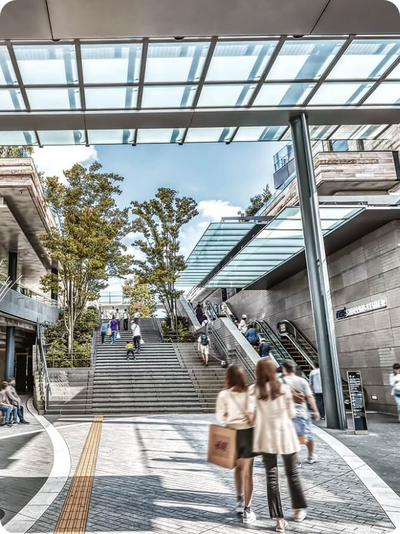

営業時間／10:00～18:00
（火・水曜定休(祝日除く)、年末年始は休業）
LocationSETAGAYA ロケーションSETAGAYA
砂の岬（900m）JRA馬事公苑（約1.3km）NEWOLD（約330m）SETAGAYA
image photo
image photo
砧公園
（約2.3km）
（約2.3km）
都市と自然が調和する
世田谷で描く
理想の暮らし。
トレンドのグルメ＆スポットが揃う、
人々が憩う緑豊かな公園、
都会の輝きと自然の癒しが
調和する世田谷で、
ゆっくりと理想の暮らしが動き出す。
image photo
使いこなす。
心弾む２つの街を
FUTAKO TAMAGAWA

image photo
日常生活を
アップグレードする
二子玉川。
東急田園都市線「桜新町」駅から
「二子玉川」駅まで直通5分（4分）。
大型複合施設「二子玉川ライズ」（約3.6km）
をはじめ、いつもの日常を豊かにする
グルメやショップが揃っています。
SANGEN-JAYA
image photo
image photo
レトロな魅力とトレンドが
共存する三軒茶屋。
東急田園都市線「桜新町」駅から
「三軒茶屋」駅まで
直通5分（4分）。
レトロな面影を残し、
買い物・食事・文化を満喫できる。
新旧の多様な表情を持つ
魅力ある街です。
image photo
潤いある住環境。
自然と都市が溶け合う
自然とふれあう
癒しの空間を身近に。
都心とほどよい距離にありながら、
「砧公園」「JRA馬事公苑」
「駒沢オリンピック公園」などの
大規模公園をはじめ、
自然とふれあいながら
過ごせる落ち着いた
住環境が整っています。
image photo
砧公園（約2.3km）
砧公園（約2.3km）
周辺の大規模公園
砧公園 （約 2.3 km）
JRA馬事公苑 （約 1.3 km）
駒沢オリンピック公園 （約 1.6 km）
周辺概念図
羨望の街が集う地、
世田谷アドレス。
世田谷区は人口約90万人を超え
23区
内1位※1でありながら、
公園数でも23区内2位※2と上位に位置しています。
また、区内には「二子玉川」や「三軒茶屋」をはじめ
「下北沢」など多世代に親しまれる
個性的で魅力的な街がたくさんある、
人気の行政区です。
※1「東京都の人口（推計）」の概要／出典：東京都総務局（2024年4月1日現在）
※2「東京都都市公園等区市町村別面積・人口割比率表」／出典：東京都建設局（2023年4月1日現在）
※掲載の周辺概念図は一部路線・道路・施設等を抜粋して表記しています。
標高概念図
武蔵野台地に支えられた
安定した地盤。
現地は強固な地盤として知られる武蔵野台地に位置。世田谷区内、沿線の他の街と比べても高台にあります。
-
「渋谷」駅
（約 20.3 m） -
「三軒茶屋」駅
（約 33.1 m） -
シティハウス弦巻
（約 36.4 m） -
「用賀」駅
（約 34.9 m） -
「二子玉川」駅
（約 12.8 m）
※掲載の標高は「国土地理院ウェブサイト」にて検索（2024年5月現在）したものです。
（計測地/【シティハウス弦巻】東京都世田谷区弦巻3丁目18、【JR山手線 渋谷駅】東京都渋谷区道玄坂2-1-1 、【東急田園都市線
二子玉川駅】東京都世田谷区玉川2-22-13、【東急田園都市線 三軒茶屋駅】東京都世田谷区太子堂2-15、【東急田園都市線 用賀駅】東京都世田谷区用賀2-39
※掲載の所要時間は待ち時間・乗り換え時間を含んだ通勤時(カッコ内は平常時)の目安であり、時間帯により多少異なります。
※距離表示については地図上の概測距離を、徒歩分数表示については80ｍを1分として算出し、端数を切り上げたものです。
※掲載の写真は2024年5月撮影。
※掲載の情報は2024年3月現在のものです。店舗・施設の内容等は将来変わる可能性があります。
※距離表示については地図上の概測距離を、徒歩分数表示については80ｍを1分として算出し、端数を切り上げたものです。
※掲載の写真は2024年5月撮影。
※掲載の情報は2024年3月現在のものです。店舗・施設の内容等は将来変わる可能性があります。